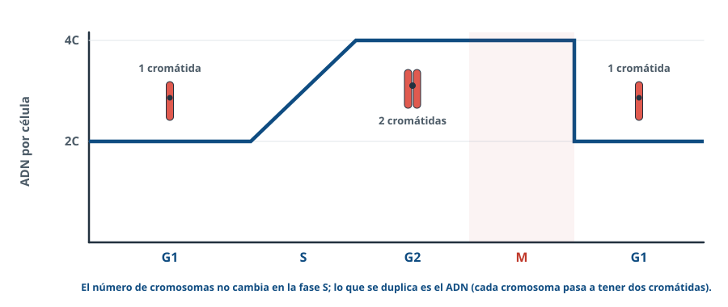
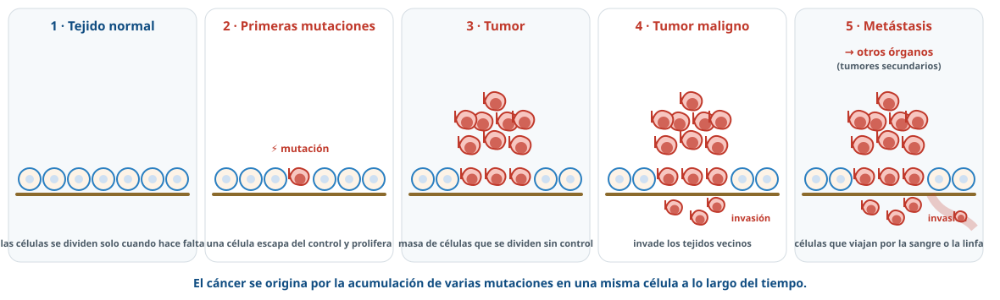
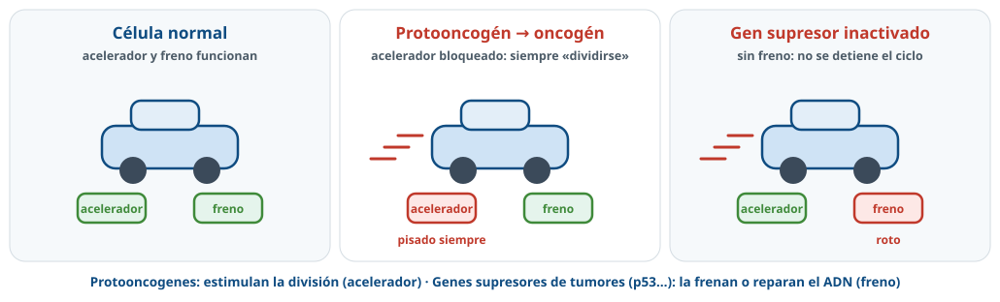
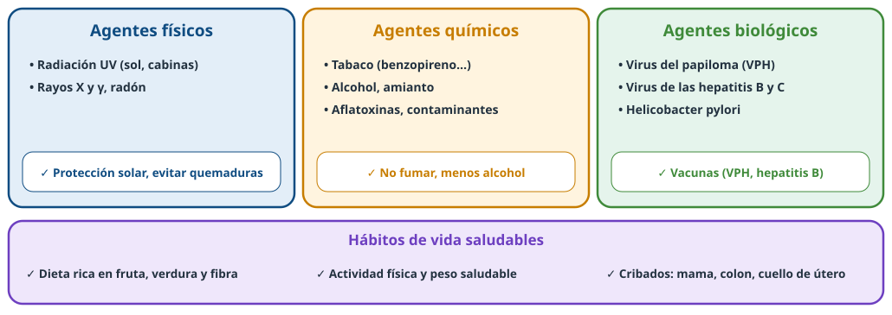

Cuando el ciclo
pierde el control
El ciclo celular, sus frenos y el cáncer.
Usa ← → o el espacio para avanzar · F para pantalla completa
Directrices 26-27 · C.5 y C.7¿Qué nos van a pedir?
Ciclo celular
Interfase (G1, S, G2) y fase M. ADN y cromátidas.Cáncer
Proliferación descontrolada por mutaciones y fallo de los controles del ciclo.Prevención
Agentes cancerígenos, hábitos saludables y avances en Andalucía.C.5El ciclo celular
C.5Qué ocurre en cada fase
G1
La célula crece: proteínas, ARN, orgánulos.S
Replicación del ADN y síntesis de histonas.G2
Preparación para la división.M
Mitosis y citocinesis.G0Células que dejan de dividirse: neuronas, fibras musculares. Los hepatocitos pueden volver al ciclo.
C.5El ADN a lo largo del ciclo

En S: de 2C a 4C; los cromosomas pasan a dos cromátidas, pero no aumentan en número.
RegulaciónPuntos de control
G1/S (punto R)
¿Tamaño, nutrientes, señales, ADN sano? Si no, la célula espera o pasa a G0.G2/M
¿ADN replicado completo y sin errores?Mitosis
¿Todos los cromosomas unidos al huso?Si el ADN está dañado y no se repara, la proteína p53 puede llevar a la célula a la apoptosis (muerte programada).
C.7¿Qué es el cáncer?

Proliferación descontrolada de células por mutaciones en genes que controlan el ciclo. Maligno: invade y produce metástasis.
C.7El acelerador y el freno

Hacen falta varias mutaciones en la misma célula: por eso el riesgo crece con la edad.
C.7¿Genético o hereditario?
Genético: siempre
Se origina por mutaciones en genes del ciclo.Hereditario: pocas veces
La mayoría de mutaciones son somáticas y no pasan a los hijos. Algunas germinales (BRCA1/2) predisponen.C.7.3Agentes cancerígenos y prevención

TratamientosAtacar la división
- Cirugía, radioterapia, quimioterapia, inmunoterapia.
- Taxol y vinblastina: bloquean los microtúbulos → sin huso no hay división.
- Efectos secundarios: también se paran las células que se dividen mucho (pelo, intestino, médula ósea).
📍 En Andalucía
Investigan el cáncer GENYO (Granada), IBiS y CABIMER (Sevilla) o IBIMA (Málaga). Programas públicos de cribado de mama y colon.Problema¿Sabrías resolverlo?
🌿 La vinblastina impide el ensamblaje de los microtúbulos. ¿Por qué sirve contra el cáncer? ¿Afectaría a la formación de gametos? (PAU 2011)
Sin huso no hay mitosis: el tumor no prolifera. Tampoco hay meiosis: no se forman gametos.
🧪 Una toxina destruye los nucléolos. ¿Por qué mueren las células tumorales? (PAU 2024)
Sin ARNr no hay ribosomas ni síntesis de proteínas; no completan el ciclo y mueren.
Prevenir
es posible
Repasa los apuntes y practica en Entrenamiento de BioCelia.